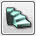

UDN
Search public documentation:
MainEditorToolbox
日本語訳
中国翻译
한국어
Interested in the Unreal Engine?
Visit the Unreal Technology site.
Looking for jobs and company info?
Check out the Epic games site.
Questions about support via UDN?
Contact the UDN Staff
中国翻译
한국어
Interested in the Unreal Engine?
Visit the Unreal Technology site.
Looking for jobs and company info?
Check out the Epic games site.
Questions about support via UDN?
Contact the UDN Staff
Main Editor Toolbox
Overview
Editor Modes
Camera Mode
Puts the editor into Camera Mode which is the default editing mode for adding, selecting, and modifying actors as well.Geometry Mode
Puts the editor into Geometry Mode and opens the Geometry Mode window which allows for editing CSG brushes with the transform tools in the viewports. For more information on using this mode, see the Getting Started with geometry Mode page.Terrain Editing Mode
Puts the editor into Terrain Editing Mode and opens the Terrain Editor window. For more information on using this mode, see the Terrain Editor User Guide.Texture Alignment Mode
 Puts the editor into Texture Alignment Mode which allows for modifying texture panning, rotation, and scaling on CSG surfaces interactively in the viewports.
Puts the editor into Texture Alignment Mode which allows for modifying texture panning, rotation, and scaling on CSG surfaces interactively in the viewports.
Mesh Paint Mode
Puts the editor into Mesh Paint Mode which allows painting of vertex colors on meshes interactively in the editor viewports. For more information on using this mode, see the Mesh Paint Reference page.Static Mesh Mode
Puts the editor into Static Mesh Mode which allows for the quick placement of many similar static meshes using minimum and maximum scaling and rotation values, providing the ability to do things like add ‘clutter’ to a map quickly.Brush Primitives
Cube
Creates a cube or box-shaped brush. This is most often used to build out rooms or shells of rooms, especially in early stages of development for blocking out areas and testing flow.Cone
Creates a cone-shaped brush, or a cylinder with one end collapsed to a single point.Curved Staircase
 Creates a brush in the forum of a curved set of stairs. Note: It is usually better to use a static mesh for something like this.Cylinder
Creates a cylindrical Brush which can be used for things such as circular shaped-rooms, pipes, columns, etc.Linear Staircase
Creates a brush in the form of a linear set of stairs. Note: It is usually better to use a static mesh for something like this.Sheet
Creates a single quad brush, or a plane. This will not collide with or block the player or other geometry.Spiral Staircase
Creates a brush in the form of a spiral set of stairs. Note: It is usually better to use a static mesh for something like this.Tetrahedron (Sphere)
Creates a spherical brush comprised completely of triangles and can potentially form a very complex and dense surface, geometrically speaking. Note: A static mesh should be used for geometry such as this as BSP brushes should be simple shapes to avoid errors.Cards
This primitive creates a series of sheets rotated around the pivot point. It can be good for creating various texture effects, such as fire, smoke, plasma, trees, and chains in situations where performance is more important than perfect detail.CSG Operations
Add
Creates a new additive brush from the current builder brush.Subtract
Creates a new subtractive brush from the current builder brush..Intersect
 Creates a brush from the intersection of all brushed encompassed by the current builder brush and replaces the builder brush with the new brush
Creates a brush from the intersection of all brushed encompassed by the current builder brush and replaces the builder brush with the new brush
Deintersect
Creates a brush from the deintersection of all brushed encompassed by the current builder brush and replaces the builder brush with the new brush.Additonal Brushes
The tools in this region allow for the adding of special brushes and volumes to the level using the current builder brush.Add Special Brush
Opens the Add Special brush dialog for adding a new special brush type using the current builder brush.Add Volume
Creates a new type of volume brush from the builder brush by right-clicking and selecting one from the list.Selections and Visibility Area
Show Selected Actors Only
Hides all actors in the map except those that are currently selected.Hide Selected Actors
Hides all currently selected actors.Invert Selection
 Deselects all currently selected actors and selects all actors which were not in the original selection.
Deselects all currently selected actors and selects all actors which were not in the original selection.